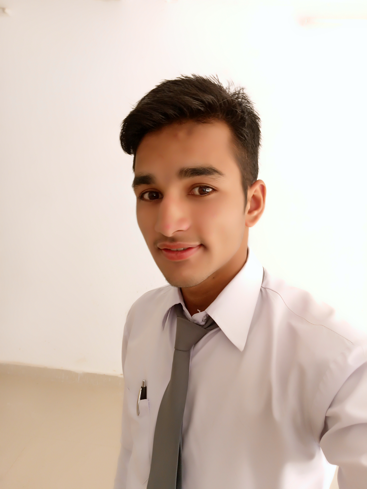

Welcome into my Site

Biography
Saurabh Singh Rawat, son of Mr. Dharam Singh Rawat . He was born on july of 27, in 1998. He blonges from a middle class femily.But he says "their is an aboundance of every thing in his life,and he is always greatful for that.because he thinks "whatever we think, whether god or bad & whatever we fell either good or bad we become as a like that".So when you want to change your circumstancess, you must first think right thaught", and he's a whelthy person with healthy. So after his childhood he had done his seniour secondary from his village's School. He was so intrested for his study cause of his both elder sister had been pursuieding him for study sence his childwood. He wanted to do his further study, and for that he came in Rudraprayag for his diploma. And still he's persuing his engineering.
A beatfiul thought for you
You can see me also Follow me at
Twitter,Facebook & Instagram